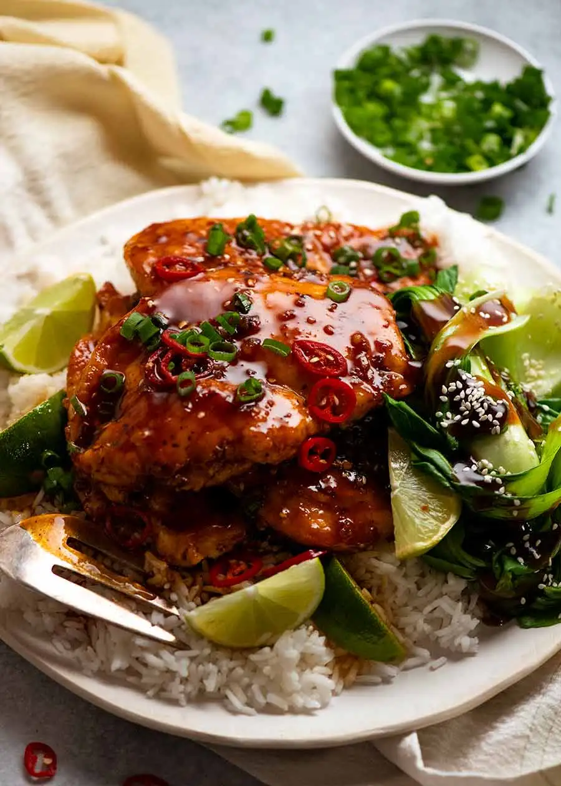

Asian Chilli Chicken

Description
Asian Chilli Chicken is a quick chicken dinner that's an explosion of (spicy!) sticky, savoury Asian flavours. 287 calories of tasty goodness in 8 minutes flat!
Ingredients
Chicken
- 500g chicken breast
- 0.5 tsp each salt and pepper
- 1.5 tbsp flour
- 1.5 tbsp oil
Sauce
- 2 tsp sesame oil
- 2 garlic cloves, finely minced
- 2 tsp ginger, finely minced
- 1 tsp chilli flakes
- 0.5 cups water
- 3 tbsp sriracha sauce
- 1 tbsp soy sauce
- 0.25 cup honey
- 3 tbsp lime juice
Instructions
- Cut each chicken breast in half horizontally to form 4 steaks total. Sprinkle each side with salt, pepper and rice flour, shaking off excess.
- Heat oil in a large skillet over high heat. Add chicken and cook for 2 minutes. Turn and cook the other side for 2 minutes, then remove to a plate.
- Allow the skillet to cool a bit then return to the stove on medium. Add sesame oil and heat.
- Add garlic and ginger, cook for 15 seconds
- Add chilli flakes and cook for 30 seconds until garlic is golden.
- Turn heat up to medium-high. Add water, sriracha, soy sauce and honey, stir well, scraping the base of the pan to dissolve all the golden bits into the liquid.
- Simmer for 2 minutes until it reduce to a thick syrup. Add lime juice, then simmer for a further 30 seconds until it thickens back to a thick syrup.
- Turn heat off. Return chicken to pan, turning to coat in sauce.
- Serve chicken, topping with remaining sauce in skillet, garnished with green onions, sesame seed and extra lime wedges, if desired.